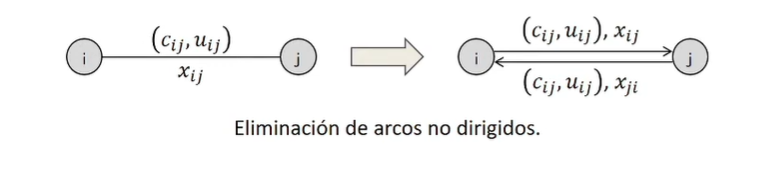
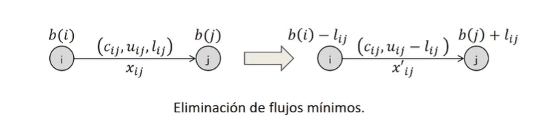
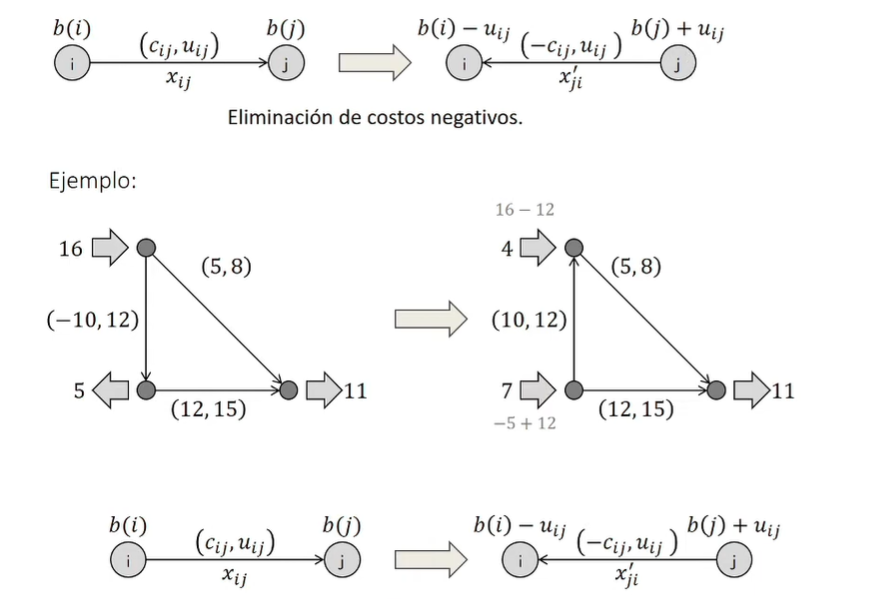
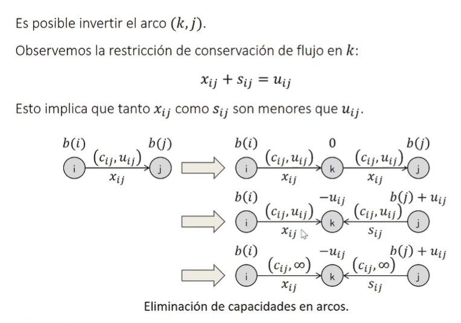
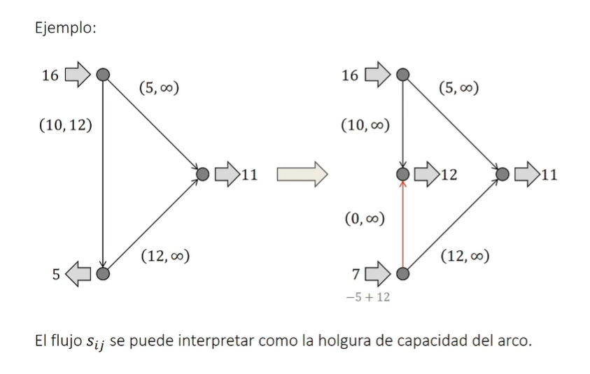

Lectura 3: Transformaciones de redes#
Existen variante del problema de flujo en redes que pueden ser representadas como el problema de flujo de costo mínimo (FCM). En esta lectura, describiremos algunas de estas variantes y cómo pueden ser transformadas a FCM.
Problema Estándar de Flujo de Costo Mínimo (FCM)#
Dada una red dirigida \(G = (V, E)\) donde \(V\) es el conjunto de nodos y \(E\) es el conjunto de aristas.
Se define:
\(x_{ij}\): flujo en el arco \((i, j)\).
\(u_{ij}\): capacidad del arco \((i, j)\).
\(c_{ij}\): costo por unidad de flujo en el arco \((i, j)\).
\(b_i\): oferta (o demanda) en el nodo \(i\).
El problema FCM puede formularse como:
Minimizar: $\( \sum_{(i,j) \in E} c_{ij} x_{ij} \)$
Sujeto a:
Modificaciones#
Arcos no dirigidos a dirigidos:
Un arco no dirigido \((i, j)\) con capacidad \(c\) se puede representar usando dos arcos dirigidos \((i, j)\) y \((j, i)\), ambos con capacidad \(c\).

Eliminar flujo mínimo no nulo:
Si un arco \((i, j)\) tiene un flujo mínimo \(l_{ij}\), puedes restar este valor del flujo máximo, es decir, \(c_{ij} = c_{ij} - l_{ij}\) y ajustar la oferta y la demanda de los nodos correspondientes. Esto es:
\(b_i = b_i + l_{ij}\)
\(b_j = b_j - l_{ij}\)

Podemos usar esta transformación como un cambio de variales, es decir, \(x_{ij} = y_{ij} - l_{ij}\), donde \(y_{ij}\) es el flujo en el arco \((i, j)\) después de la transformación. Esto nos da:
Minimizar: $\( \sum_{(i,j) \in E} c_{ij} (y_{ij} - l_{ij}) \)$
Sujeto a:
Eliminar costos negativos:
Podemos enviar \(u_{ij}\) unidades de flujo desde el nodo \(i\) hasta el nodo \(j\), e invirtiendo el sentido del arco. El flujo \(y_{ij}\) representará el flujo de devolver el flujo en dichos arcos. Esto equivale a hacer un cambio de variables \(x_{ij} = y_{ij} - u_{ij}\): 
Observemos que pasaa analiticamente usar el cambio de variable \(x_{ij} = u_{ij} - y_{ij}\):
Minimizar: $\( \sum_{(i,j) \in E} (u_{ij} - y_{ij}) {c}_{ij} \)\( \)\( = \sum_{(i,j) \in E} u_{ij} c_{ij} - \sum_{(i,j) \in E} y_{ij} c_{ij} \)$
Sujeto a: $\( \sum_{j|(i,j) \in E} (u_{ij} - y_{ij}) - \sum_{j|(j,i) \in E} (u_{ji} - y_{ji}) = b_i, \forall i \in V \)\( \)\( \sum_{j|(i,j) \in E} u_{ij} - \sum_{j|(i,j) \in E} y_{ij} - \sum_{j|(j,i) \in E} u_{ji} + \sum_{j|(j,i) \in E} y_{ji} = b_i, \forall i \in V \)\( \)\( \sum_{j|(i,j) \in E} u_{ij} - \sum_{j|(j,i) \in E} u_{ji} = b_i + \sum_{j|(i,j) \in E} y_{ij} - \sum_{j|(j,i) \in E} y_{ji}, \forall i \in V \)\( \)\(0\leq y_{ij} \leq u_{ij}, \forall (i,j) \in E\)$
Eliminar capacidades en los arcos:
Para convertir un problema de flujo de costo mínimo con capacidades máximas en uno que no las tiene, una forma de hacerlo es “integrar” la capacidad máxima dentro de la estructura del problema. A continuación se describe un enfoque para hacerlo:
Dado un arco \((i, j)\) con capacidad máxima \(u_{ij}\), podemos realizar la siguiente transformación:
Introducir un nodo adicional: Crea un nuevo nodo \(k\).
Reemplazar el arco original: Sustituye el arco \((i, j)\) por dos nuevos arcos: \((i, k)\) y \((k, j)\).
Costos y oferta/demanda: Asigna a ambos nuevos arcos el mismo costo que el arco original \((i, j)\). También, establece una oferta/demanda de \(u_{ij}\) en el nodo \(k\) (específicamente, oferta de \(u_{ij}\) y demanda de \(u_{ij}\)).
Arcos sin capacidad máxima: Los nuevos arcos \((i, k)\) y \((k, j)\) no tendrán capacidades máximas, permitiendo que cualquier cantidad de flujo pueda pasar por ellos, pero la oferta/demanda en el nodo \(k\) asegurará que no más de \(u_{ij}\) flujo atraviese la “ruta” \((i, k, j)\).
Repitiendo este proceso para cada arco con capacidad máxima en la red, obtendremos una red transformada sin capacidades máximas en los arcos.


Transformación:#
Para cada arco \((i, j)\) con capacidad \(u_{ij}\):
Introduce un nuevo nodo \(k_{ij}\).
Reemplaza \((i, j)\) con dos arcos: \((i, k_{ij})\) y \((k_{ij}, j)\). Ambos arcos tienen el mismo costo \(c_{ij}\) que el arco original.
Establece una demanda \(b_{k_{ij}} = -u_{ij}\) para el nodo \(k_{ij}\) y ajusta la oferta o demanda en el nodo \(i\) para mantener el balance, es decir, \(b_i = b_i - u_{ij}\).
Formulación:#
Minimizar:
Sujeto a:
Donde \(E'\) es el conjunto de nuevos arcos creados a partir de la transformación.
Eliminar costos en los nodos:
En algunos problemas de optimización en redes, es posible que algunos nodos tengan costos asociados. Estos costos en los nodos pueden surgir, por ejemplo, cuando hay un costo asociado con el manejo o almacenamiento de mercancías en un punto en particular de la red. Aunque el problema clásico de flujo de costo mínimo considera únicamente costos en los arcos, es posible transformar un problema que tiene costos en los nodos en un problema estándar de flujo de costo mínimo.
La estrategia general para hacer esto es “repartir” o “transferir” el costo del nodo a los arcos que inciden en ese nodo. La idea es que si hay un costo por pasar por un nodo, ese costo se manifieste en el proceso de entrar o salir de ese nodo.
Consideremos el siguiente enfoque:
Agregando el costo a los arcos salientes: Si el nodo \(i\) tiene un costo \(c_i\), este costo puede interpretarse como un “peaje” que debe pagarse al salir del nodo. Así, por cada unidad de flujo que sale del nodo \(i\), se incurre en el costo \(c_i\). De esta forma, podemos simplemente añadir \(c_i\) al costo de cada arco que sale de \(i\).
Restando el costo de los arcos entrantes: Del mismo modo, si interpretamos \(c_i\) como un “reembolso” que se recibe al entrar al nodo \(i\), podemos restar \(c_i\) del costo de cada arco que entra en \(i\). Esto significa que por cada unidad de flujo que entra al nodo \(i\), obtenemos un reembolso o beneficio de \(c_i\).
Estas dos operaciones son equivalentes en términos del efecto total sobre el costo. Es decir, al pasar flujo a través del nodo \(i\), se incurre netamente en el costo \(c_i\). En la práctica, se puede elegir cualquiera de las dos operaciones dependiendo de la interpretación del problema en cuestión. Es importante destacar que esta transformación es válida porque el flujo conserva su propiedad de “continuidad” a través de un nodo: lo que entra, debe salir.